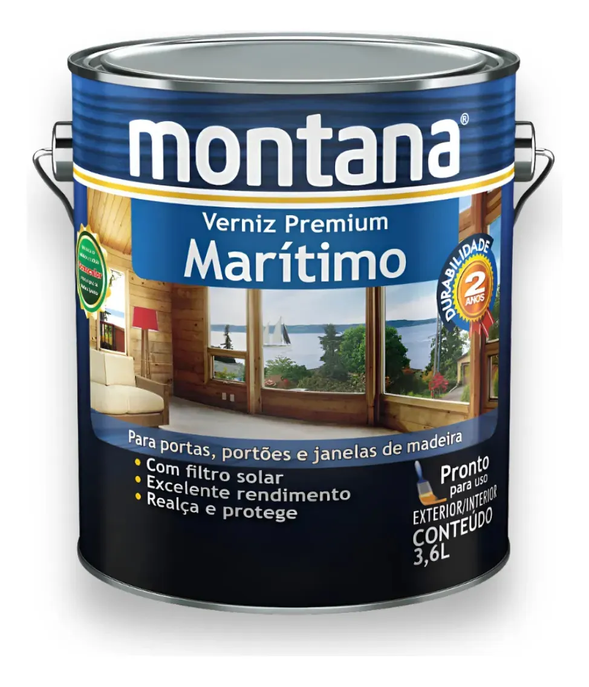
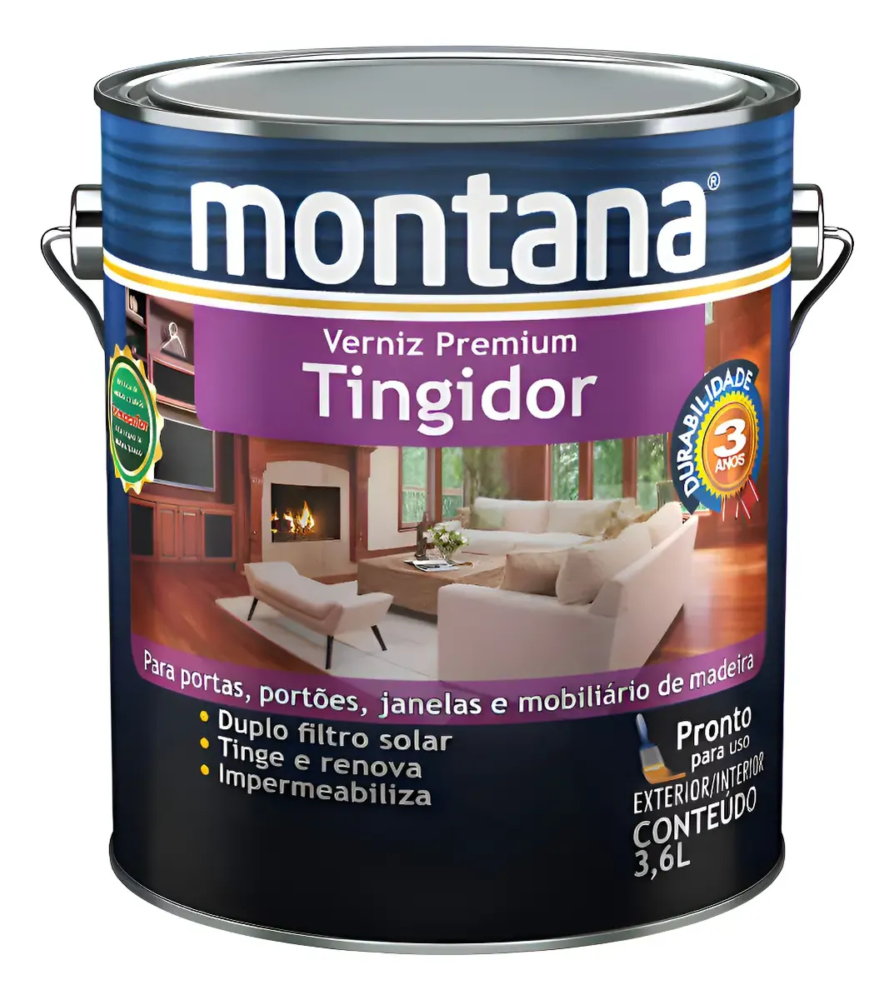
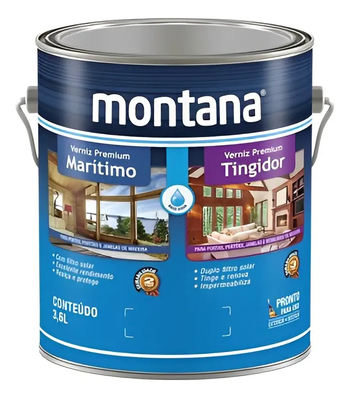
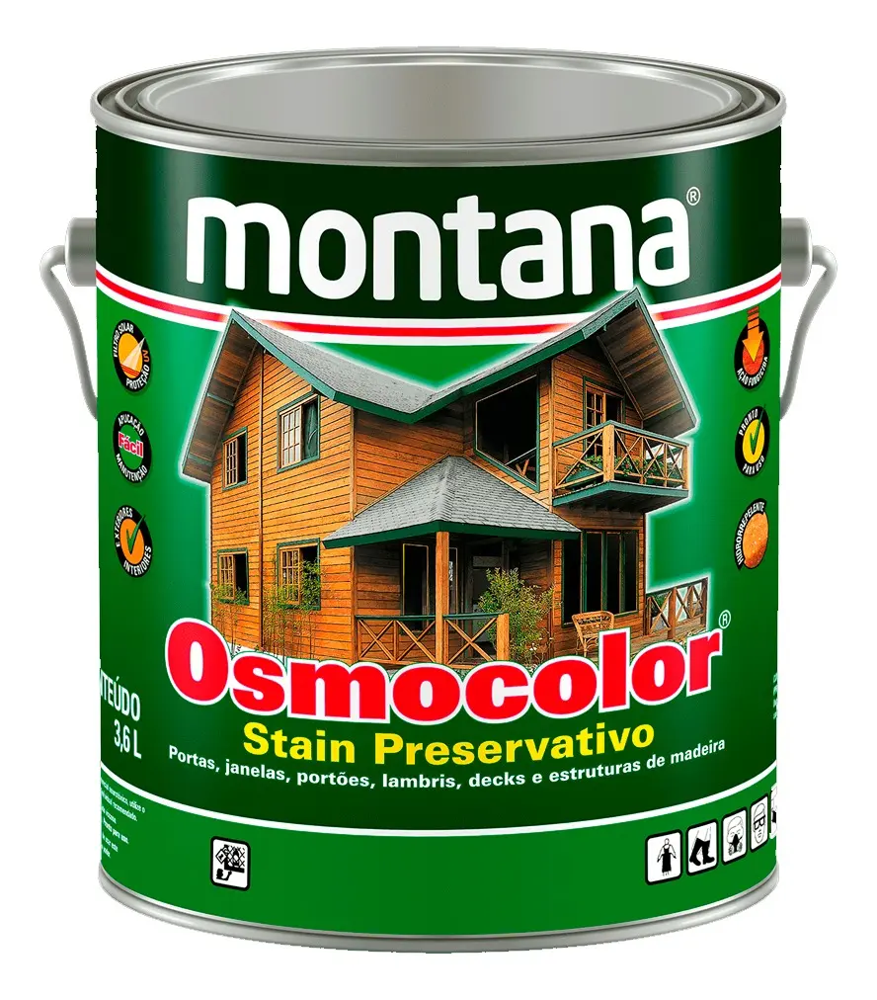
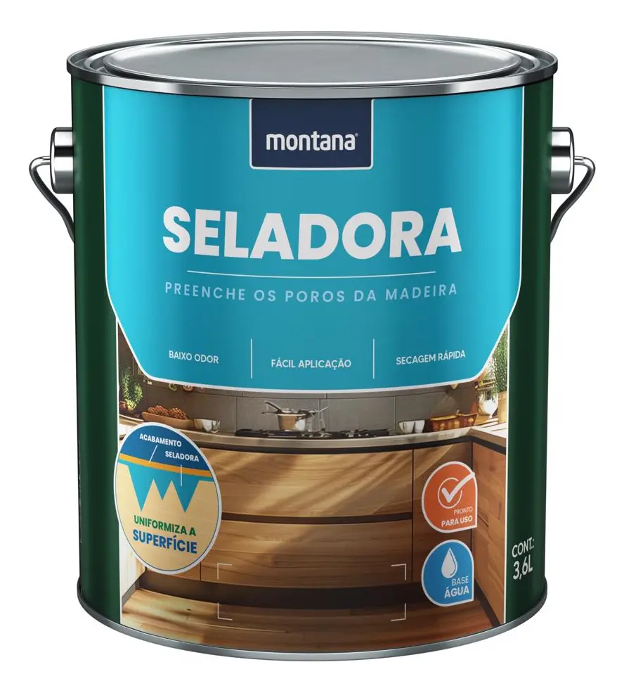

Verniz Premium Marítimo Brilhante
📐 Tamanhos disponíveis: 900ml, 3,6L e 18LO Verniz Premium Marítimo é um verniz transparente de acabamento brilhante, feito com resina à base de poliuretano modificada e filtro solar. Após a secagem, forma uma película que protege, realça os veios, embeleza e enobrece a madeira.

Verniz Premium Tingidor
📐 Tamanhos disponíveis: 900ml, 3,6L e 18L 🎨 Cores disponíveis: Imbuia, Mogno e IpêVerniz Tingidor Premium é um verniz que além de proporcionar cor, protege a madeira contra as intempéries naturais, exposição à chuva e luz solar direta. Ideal para madeiras novas e para restauração.

Verniz Premium Marítimo Base Água
📐 Tamanhos disponíveis: 900ml e 3,6L 🎨 Cores disponíveis: Transparente e ImbuiaO Verniz Premium Marítimo Base Água forma uma película do lado de fora da madeira, realçando e protegendo a madeira. Pode ser utilizado em áreas externas e internas, além de ter rápida secagem e baixo odor.

Osmocolor Stain Preservativo Acetinado
📐 Tamanhos disponíveis: 900ml, 3,6L e 18L 🎨 Cores disponíveis: Natural UV GOLD, Nogueira, Transparente, Imbuia e MognoOsmocolor é um acabamento para madeira da categoria Stain. Ele proporciona proteção à sua madeira sem formar película, ou seja, o produto penetra nos veios da madeira e não altera suas características naturais.

Seladora para Madeira Base Água
📐 Tamanhos disponíveis: 900ml e 3,6LIndicado para uso interno como fundo para fechar os poros e uniformizar a superfície de madeiras novas, aumentando assim o rendimento dos vernizes.